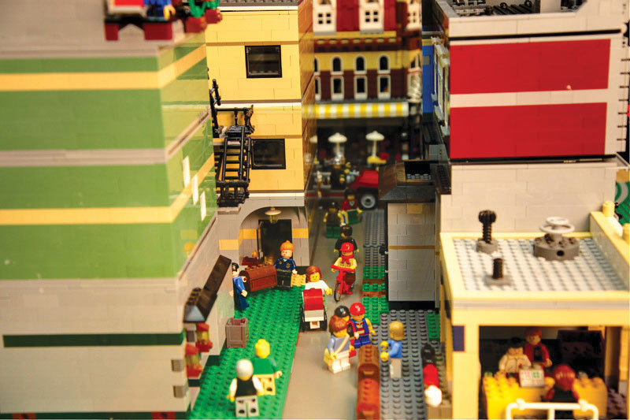
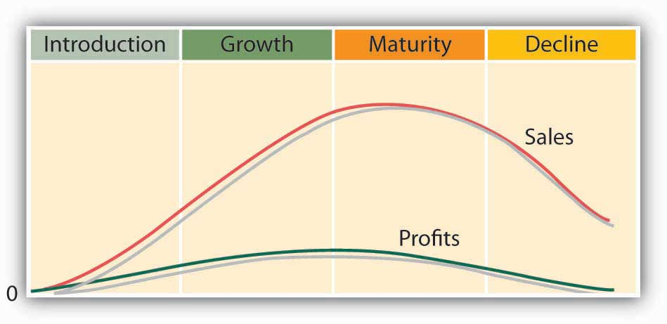

Figure 9.12
LEGO has decided to go back to basics and focus on the classic bricks rather than complicated kits.
Did you play with LEGO blocks when you were a kid? Almost everyone did. They were a big deal. Store shelves were stacked with boxes of plastic bricks, wheels, and windows, plus packages containing just the pieces you needed to make something special, like a LEGO helicopter. McDonald’s put LEGO sets in Happy Meals. If you walk down a toy-store aisle today, you’ll still find LEGOs. They’re shelved alongside the XBOX Kinect, Buzz Lightyear, and other playthings that appeal to contemporary kids. Like these products, they’re more sophisticated. They’re often tied in with movies, such as Toy Story, Cars, Star Wars, and Harry Potter.
Nowadays, the seventy-nine-year old Denmark company is doing very well: in 2010, its sales rose 37 percent and profits were up 70 percent.“LEGO Profits Jump, Toymaker Wins Market Share,” Reuters, March 3, 2011, http://www.reuters.com/article/2011/03/03/lego-earnings-idUSLDE72224B20110303 (accessed October 23, 2011). The LEGO Group has moved its way up to the fifth largest toy company in the world based on sales.Tamsin Brown, “The Building Blocks of Success: LEGO Emerges from Economic Gloom with Sales Boost of 25%,” Daily Mail, September 1, 2011, http://www.dailymail.co.uk/news/article-2032033/The-building-blocks-success-LEGO-bucks-trend-sales-boost-25.html?ITO=1490 (accessed October 23, 2011). Things were very different seven years earlier—LEGO sales had declined drastically in the early 2000s. In its 2003 annual report, its CEO admitted that “2003 was a very disappointing year for LEGO Company.” Net sales fell by 26 percent, resulting in a loss in earnings for the year and significant decline in market share. LEGO planned to drop many of its recent initiatives and focus on its classic LEGO brick products.LEGO Group, Annual Report 2003, http://cache.LEGO.com/upload/contentTemplating/AboutUsFactsAndFiguresContent/otherfiles/download049677E7DF3EF6655CF3EE4ADF8DF598.pdf (accessed October 21, 2011).
Let’s look closer and find out what happened to the LEGO brand prior to its turnaround seven years ago. It was moving through stages of development and decline.See “LEGO Attempts to Woo Back Preschoolers by Relaunching Duplo Series,” KeepMedia, February 2, 2004, http://www.keepmedia.com/pubs/AFP/2004/02/02/364595 (accessed May 21, 2006); “Is There a Future for LEGO in Kids’ High-Tech Game World?” KeepMedia, January 10, 2004, http://www.keepmedia.com/ShowItemDetails.do?item_id=348949 (accessed May 21, 2006); Charles Fishman, “Why Can’t LEGO Click,” Fast Company, September 1, 2001, http://www.fastcompany.com/online/50/LEGO.html (accessed October 22, 2011). Marketers call this process the product life cycleFour stages that a product goes through over its life: introduction, growth, maturity, and decline., which is illustrated in Figure 9.13 "The Product Life Cycle". In theory, it’s a lot like the life cycle that people go through. Once it’s developed, a new product is introduced to the market. With any success at all, it begins to grow, attracting more buyers. At some point, the market stabilizes, and the product becomes mature. Eventually, however, its appeal diminishes, and it’s overtaken by competing brands or substitute products. Sales decline, and it’s ultimately taken off the market.
Figure 9.13 The Product Life Cycle
This is a simplified version of the cycle. There are lots of exceptions to the product life-cycle rules. For one thing, most products never make it past the introduction stage; they die an early death. Second, some products (like some people) avoid premature demise by reinventing themselves. This is what the LEGO Group did. The company had been reinventing itself during the fifteen-year period of 1990 to 2005, launching new products in an effort to recover its customer base and overcome a series of financial crises. Unfortunately, this strategy was unsuccessful. As pointed out by its CEO, the introduction of new products and the resulting costs “have not produced the desired results. In some cases,” admits the company, “new products have even cannibalized on the sales of LEGO Company’s core products and thus eroded earnings.”LEGO Group, Annual Report 2003, http://cache.LEGO.com/upload/contentTemplating/AboutUsFactsAndFiguresContent/otherfiles/download049677E7DF3EF6655CF3EE4ADF8DF598.pdf (accessed October 21, 2011).
A take-over threat by Mattel Toy Company forced its CEO into action.For an excellent history of the life of LEGO, see Kartikeya Batra, “The Life of LEGO,” Bizwatch, October 17, 2010, http://bizwatchkartikeyabatra.blogspot.com/2010/10/life-of-lego.html (accessed October 23, 2011). Much of the material covered in this section was derived from this article. His first stop in formulating a resurrection plan was to fly to Virginia and attend a convention for adult fans of LEGO’s. The attendees’ stories of how LEGOs helped shape their minds gave him hope that the family-owned company could be saved. He returned to Denmark and put into place a plan that included downsizing the number of employees, selling its LEGOLAND theme parks, simplifying product designs, cutting unprofitable product lines, and focusing on what made the company great: LEGO building blocks.
As a product or brand moves through its life cycle, the company that markets it will shift its marketing-mix strategies. Let’s see how the mix might be changed at each stage.
At this stage, most companies invest in advertising to make consumers aware of a product. If it faces only limited competition, it might use a skimming-pricing approach. Typically, because it will sell only a relatively small quantity of the product, it will distribute through just a few channels. Because sales are low while advertising and other costs are high, the company tends to lose money during this stage.
As the company focuses on building sales, which are increasing rapidly at this stage, its advertising costs will go up. If competition appears, it may respond by lowering prices and distributing through multiple distribution channels. With sales going up and costs going down, the product becomes more profitable.
If a product survives the growth stage, it will probably remain in the maturity stage for a long time. Sales still grow, though at a decreasing rate, and will eventually stabilize. Advertising will be used to differentiate the product from competition. Price wars may occur, but profits will be good because sales volume will remain high. As the product becomes outdated, the company may make changes in keeping with changing consumer preferences.
In 2004, LEGO was in this stage: demand had declined as more innovative products absorbed the attention of kids. Price competition had become more intense, and profits were harder to come by; in fact, in some years, they had turned into losses. But, unlike most products that enter the decline stage, LEGO avoided its likely demise by reinventing itself. Now, as the Danish phrase leg godt, from which the name LEGO was coined, suggests, children all over the world can take out their LEGOs and “play-well.”
The stages a product goes through are introduction, growth, maturity, and decline.
(AACSB) Analysis
Did you ever have a Nintendo Game Boy? Is the product still popular? Like all products, Game Boy has a product life cycle. Your job is to describe that product life cycle. To learn something about the product, go to the Web, log on to your favorite search engine (Google, Yahoo!), and enter the phrase “Game Boy history.” Identify each of the product life stages that Game Boy has gone through, and speculate on the marketing actions that Nintendo would have taken during each stage. Where do you think Game Boy is now in its product life cycle? Where do you think it will be in five years? Justify your answers.